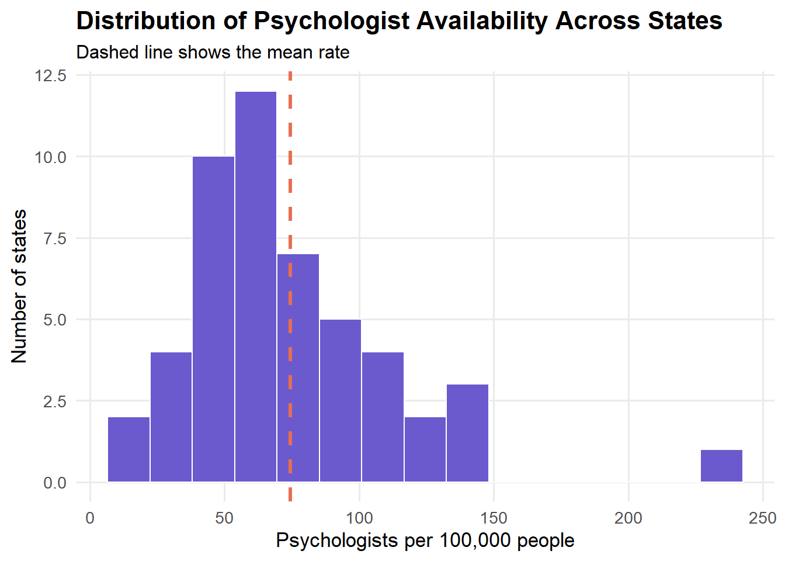
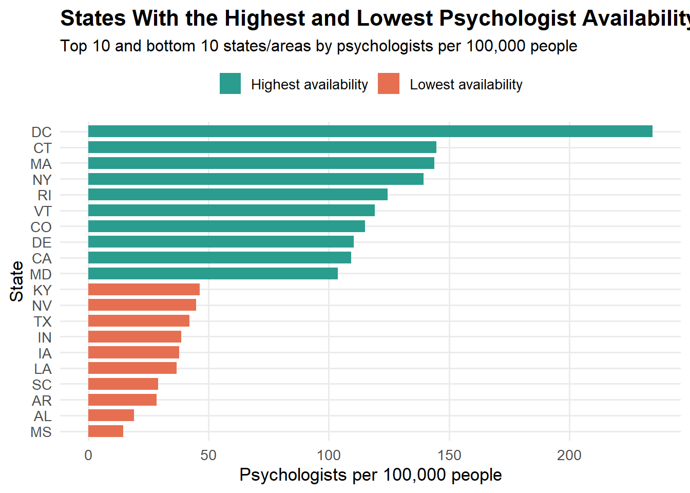
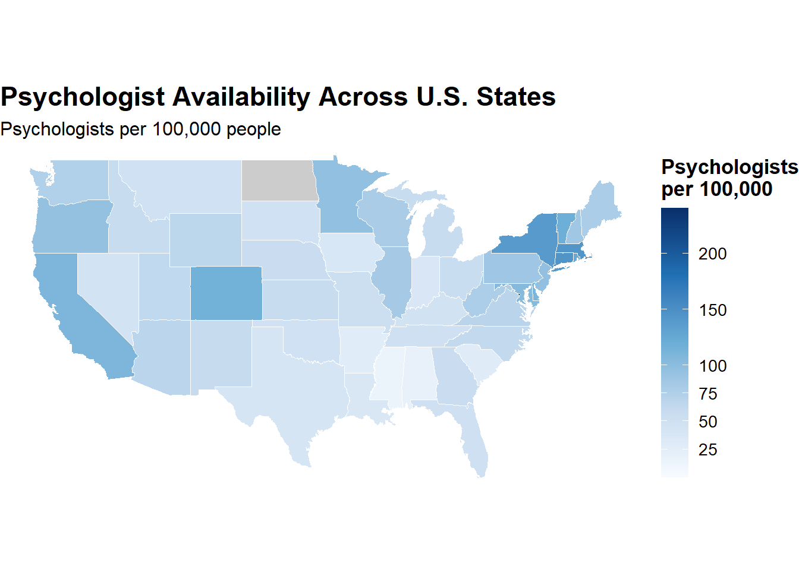

Goal: The aim of this portfolio piece is to explore whether mental health providers are evenly distributed across U.S. states. For this project, I will work with a state-level dataset from the Area Health Resources Files and focus on psychologist availability by state. This is a comprehensive dataset maintained by the Health Resources and Services Administration (HRSA).
Data source link: https://data.hrsa.gov/data/download?hmpgtitle=hmpg-hrsa-data
library(tidyverse)## ── Attaching core tidyverse packages ──────────────────────── tidyverse 2.0.0 ──
## ✔ dplyr 1.2.0 ✔ readr 2.2.0
## ✔ forcats 1.0.1 ✔ stringr 1.6.0
## ✔ ggplot2 4.0.3 ✔ tibble 3.3.1
## ✔ lubridate 1.9.5 ✔ tidyr 1.3.2
## ✔ purrr 1.2.1
## ── Conflicts ────────────────────────────────────────── tidyverse_conflicts() ──
## ✖ dplyr::filter() masks stats::filter()
## ✖ dplyr::lag() masks stats::lag()
## ℹ Use the conflicted package (<http://conflicted.r-lib.org/>) to force all conflicts to become errorslibrary(janitor)##
## Attaching package: 'janitor'
##
## The following objects are masked from 'package:stats':
##
## chisq.test, fisher.testlibrary(maps)##
## Attaching package: 'maps'
##
## The following object is masked from 'package:purrr':
##
## mapstate_data <- read_csv("data/ahrfsn2025.csv") %>%
clean_names()## Rows: 52 Columns: 1448
## ── Column specification ────────────────────────────────────────────────────────
## Delimiter: ","
## chr (2): fips_st, st_abbrev
## dbl (1412): phys_wkforc_23, phys_mal_23, phys_fem_23, phys_lt30_23, phys_30_...
## lgl (34): phys_emplymt_24, pa_nhpi_23, aprn_nhpi_23, dent_nhpi_23, dent_ai...
##
## ℹ Use `spec()` to retrieve the full column specification for this data.
## ℹ Specify the column types or set `show_col_types = FALSE` to quiet this message.The original dataset has 1448 variables, and 52 observations. I created a smaller dataset with only the columns needed for this portfolio piece. I focused on psychologists because this is a clear mental health workforce measure, and I used population to calculate a rate per 100,000 people.
mental_health_raw <- state_data %>%
select(
state = st_abbrev,
psychologists = psychol_23,
population = popn_24
)
glimpse(mental_health_raw)## Rows: 52
## Columns: 3
## $ state <chr> "AL", "AK", "AZ", "AR", "CA", "CO", "CT", "DE", "DC", "F…
## $ psychologists <dbl> 982, 588, 5125, 877, 43112, 6855, 5317, 1160, 1648, 1183…
## $ population <dbl> 5157699, 740133, 7582384, 3088354, 39431263, 5957493, 36…The file also has 52 rows because it includes the 50 states, DC, and one row for the whole U.S. I am going to remove the US row before making state graphs. I am also removing missing values if there are any.
missing_state_check <- mental_health_raw %>%
filter(state != "US") %>%
mutate(
missing_reason = case_when(
is.na(psychologists) & is.na(population) ~ "Missing psychologists and population",
is.na(psychologists) ~ "Missing psychologists",
is.na(population) ~ "Missing population",
population <= 0 ~ "Population is zero or negative",
TRUE ~ "Complete"
)
)
missing_state_check %>%
filter(missing_reason != "Complete")## # A tibble: 1 × 4
## state psychologists population missing_reason
## <chr> <dbl> <dbl> <chr>
## 1 ND NA 796568 Missing psychologistsNorth Dakota has been excluded from the list, since there is no information for psychologists.
mental_health_state <- mental_health_raw %>%
filter(
state != "US",
!is.na(state),
!is.na(psychologists),
!is.na(population),
population > 0
) %>%
mutate(
psychologists_per_100k = psychologists / population * 100000
) %>%
filter(is.finite(psychologists_per_100k))
glimpse(mental_health_state)## Rows: 50
## Columns: 4
## $ state <chr> "AL", "AK", "AZ", "AR", "CA", "CO", "CT", "DE",…
## $ psychologists <dbl> 982, 588, 5125, 877, 43112, 6855, 5317, 1160, 1…
## $ population <dbl> 5157699, 740133, 7582384, 3088354, 39431263, 59…
## $ psychologists_per_100k <dbl> 19.03950, 79.44518, 67.59088, 28.39700, 109.334…mental_health_state %>%
arrange(desc(psychologists_per_100k)) %>%
print(n = 10)## # A tibble: 50 × 4
## state psychologists population psychologists_per_100k
## <chr> <dbl> <dbl> <dbl>
## 1 DC 1648 702250 235.
## 2 CT 5317 3675069 145.
## 3 MA 10273 7136171 144.
## 4 NY 27701 19867248 139.
## 5 RI 1385 1112308 125.
## 6 VT 772 648493 119.
## 7 CO 6855 5957493 115.
## 8 DE 1160 1051917 110.
## 9 CA 43112 39431263 109.
## 10 MD 6505 6263220 104.
## # ℹ 40 more rowsmental_health_state %>%
arrange(psychologists_per_100k) %>%
print(n = 10)## # A tibble: 50 × 4
## state psychologists population psychologists_per_100k
## <chr> <dbl> <dbl> <dbl>
## 1 MS 426 2943045 14.5
## 2 AL 982 5157699 19.0
## 3 AR 877 3088354 28.4
## 4 SC 1592 5478831 29.1
## 5 LA 1692 4597740 36.8
## 6 IA 1224 3241488 37.8
## 7 IN 2676 6924275 38.6
## 8 TX 13140 31290831 42.0
## 9 NV 1465 3267467 44.8
## 10 KY 2125 4588372 46.3
## # ℹ 40 more rowsBefore making graphs, I looked at basic summary statistics for psychologist availability across states.
mental_health_state %>%
summarise(
number_of_states = n(),
mean_rate = mean(psychologists_per_100k, na.rm = TRUE),
median_rate = median(psychologists_per_100k, na.rm = TRUE),
min_rate = min(psychologists_per_100k, na.rm = TRUE),
max_rate = max(psychologists_per_100k, na.rm = TRUE),
sd_rate = sd(psychologists_per_100k, na.rm = TRUE)
)## # A tibble: 1 × 6
## number_of_states mean_rate median_rate min_rate max_rate sd_rate
## <int> <dbl> <dbl> <dbl> <dbl> <dbl>
## 1 50 74.5 65.1 14.5 235. 39.0The average psychologist availability was about 74.5 psychologists per 100,000 people, while the median was about 65.1 psychologists per 100,000 people.
The lowest value was about 14.5 psychologists per 100,000 people, while the highest value was about 234.7 psychologists per 100,000 people. This large range suggests that psychologist availability is not evenly distributed across states. The standard deviation was about 39.0, which also shows that there is a lot of variation in psychologist availability across states.
Let’s make a histogram to show how psychologist availability varies across states. Each value represents the number of psychologists per 100,000 people.
ggplot(mental_health_state, aes(x = psychologists_per_100k)) +
geom_histogram(
bins = 15,
fill = "#6A5ACD",
color = "white",
linewidth = 0.4
) +
geom_vline(
aes(xintercept = mean(psychologists_per_100k, na.rm = TRUE)),
color = "#E76F51",
linewidth = 1.2,
linetype = "dashed"
) +
labs(
title = "Distribution of Psychologist Availability Across States",
subtitle = "Dashed line shows the mean rate",
x = "Psychologists per 100,000 people",
y = "Number of states"
) +
theme_minimal(base_size = 13) +
theme(
plot.title = element_text(face = "bold", size = 16),
plot.subtitle = element_text(size = 12),
panel.grid.minor = element_blank()
)
The histogram shows that psychologist availability is not evenly distributed across states. Most states are clustered below 100 psychologists per 100,000 people, with many states falling around the 40–80 range. However, there is one very high value above 200 psychologists per 100,000 people, which appears to be an outlier.
Overall, the histogram suggests that most states have moderate psychologist availability, while a small number of states or areas have much higher availability.
mental_health_state %>%
arrange(desc(psychologists_per_100k)) %>%
select(state, psychologists, population, psychologists_per_100k) %>%
print(n = 10)## # A tibble: 50 × 4
## state psychologists population psychologists_per_100k
## <chr> <dbl> <dbl> <dbl>
## 1 DC 1648 702250 235.
## 2 CT 5317 3675069 145.
## 3 MA 10273 7136171 144.
## 4 NY 27701 19867248 139.
## 5 RI 1385 1112308 125.
## 6 VT 772 648493 119.
## 7 CO 6855 5957493 115.
## 8 DE 1160 1051917 110.
## 9 CA 43112 39431263 109.
## 10 MD 6505 6263220 104.
## # ℹ 40 more rowsThe isolated value on the far right of the histogram was Washington, DC, with about 235 psychologists per 100,000 people.
This is much higher than the average of about 74.5. DC may be different from many states because it has a smaller population and a high concentration of universities, hospitals, government agencies, and professional services. Because of this, I think I will interpret DC as a high-access outlier rather than as a typical state.
The histogram shows the overall distribution of psychologist availability, but it does not show which specific states are high or low.
To make the state differences easier to interpret, I created a ranking of states of highest and lowest psychologist availability. This helps identify which states have below-average access and which states have much higher psychologist availability.
top_bottom_states <- mental_health_state %>%
mutate(
rank_high = rank(-psychologists_per_100k),
rank_low = rank(psychologists_per_100k)
) %>%
filter(rank_high <= 10 | rank_low <= 10) %>%
mutate(
group = if_else(rank_high <= 10, "Highest availability", "Lowest availability"),
state = factor(state, levels = state[order(psychologists_per_100k)])
)
ggplot(top_bottom_states, aes(x = state, y = psychologists_per_100k, fill = group)) +
geom_col(width = 0.75) +
coord_flip() +
scale_fill_manual(
values = c(
"Highest availability" = "#2A9D8F",
"Lowest availability" = "#E76F51"
)
) +
labs(
title = "States With the Highest and Lowest Psychologist Availability",
subtitle = "Top 10 and bottom 10 states/areas by psychologists per 100,000 people",
x = "State",
y = "Psychologists per 100,000 people",
fill = NULL
) +
theme_minimal(base_size = 13) +
theme(
plot.title = element_text(face = "bold", size = 16),
plot.subtitle = element_text(size = 12),
legend.position = "top",
panel.grid.minor = element_blank()
)
This plot shows the 10 states/areas with the highest and lowest psychologist availability. Washington, DC stands out as the highest value, with far more psychologists per 100,000 people than any other state or area. Connecticut, Massachusetts, New York, and Rhode Island also have relatively high psychologist availability.
At the lower end, Mississippi, Alabama, Arkansas, South Carolina, and Louisiana have the lowest psychologist availability in this dataset. The gap between the highest and lowest areas is very large, which shows that psychologist availability is not evenly distributed across the United States.
Now, let’s try visualizing it in a map to see if psychologist availability has geographic patterns.
state_map <- map_data("state")
state_abbrev_lookup <- tibble(
state = state.abb,
region = str_to_lower(state.name)
) %>%
bind_rows(
tibble(state = "DC", region = "district of columbia")
)
map_data_joined <- state_map %>%
left_join(state_abbrev_lookup, by = "region") %>%
left_join(mental_health_state, by = "state")
ggplot(map_data_joined, aes(x = long, y = lat, group = group, fill = psychologists_per_100k)) +
geom_polygon(color = "white", linewidth = 0.25) +
coord_fixed(1.3) +
scale_fill_gradientn(
colors = c("#F7FBFF", "#C6DBEF", "#6BAED6", "#2171B5", "#08306B"),
breaks = c(25, 50, 75, 100, 150, 200),
limits = c(0, 240),
na.value = "grey80"
) +
labs(
title = "Psychologist Availability Across U.S. States",
subtitle = "Psychologists per 100,000 people",
fill = "Psychologists\nper 100,000"
) +
theme_void(base_size = 13) +
theme(
plot.title = element_text(face = "bold", size = 17),
plot.subtitle = element_text(size = 12),
legend.position = "right",
legend.title = element_text(face = "bold"),
legend.key.height = unit(1.2, "cm")
)
The map shows that psychologist availability varies across the United States. Darker blue states have more psychologists per 100,000 people, while lighter states have fewer psychologists per 100,000 people.
Several Northeastern states, including Connecticut, Massachusetts, New York, and Rhode Island, appear to have higher psychologist availability.
Some Southern states, including Mississippi, Alabama, Arkansas, South Carolina, and Louisiana, appear to have lower psychologist availability.
Washington, DC is the darkest area on the map, which matches the earlier finding that it had the highest psychologist availability in the dataset.